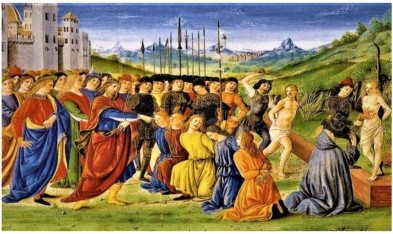

0167 Judah Machabee besieges the Greek garrison in Jerusalem
0167 The Book of Daniel is composed and written back into the days of the Babylonian captivity. Continued domination by a parade of foreign powers in spite of the piety of the priests and people discredits the Deuteronomist view and heralds the emergence of Apocalypticism. The characteristics of apocalyptic works are: pseudonymity - visions are attributed to figures from the past; numerical symbolism; secret language - contemporary rulers referred to by past rulers; animal symbolism; doctrine of angels; division of history into periods (of which the Greek is the fourth and final); references to the coming time; and belief in one or more Messiahs who would deliver Israel from foreign domination (a point conveniently overlooked by Christians).
0164 The Machabean rebels are victorious. Jonathan Machabee becomes High Priest, though he is not a Zadokite, and purifies the Temple - the origin of Hanukkah. The Zadokites then evolve into 1) the Egyptian Leontopolis cult under Onius IV, 2) Jerusalem’s Sadducees, and 3) the Essenes of the Qumran sect. Some see this period also as a civil war between orthodox and Hellenized Jews. Hasmonean kings attempt to revive the Judah described in the Bible: a Jewish monarchy ruling from Jerusalem over all territories once ruled by David and Solomon. In order to carry out this project, the Hasmoneans forcibly convert Moabites, Edomites, and Ammonites, as well as the lost kingdom of Israel (Samaritans) to Judaism.

Antiochus seeks to eradicate the Jewish Religion